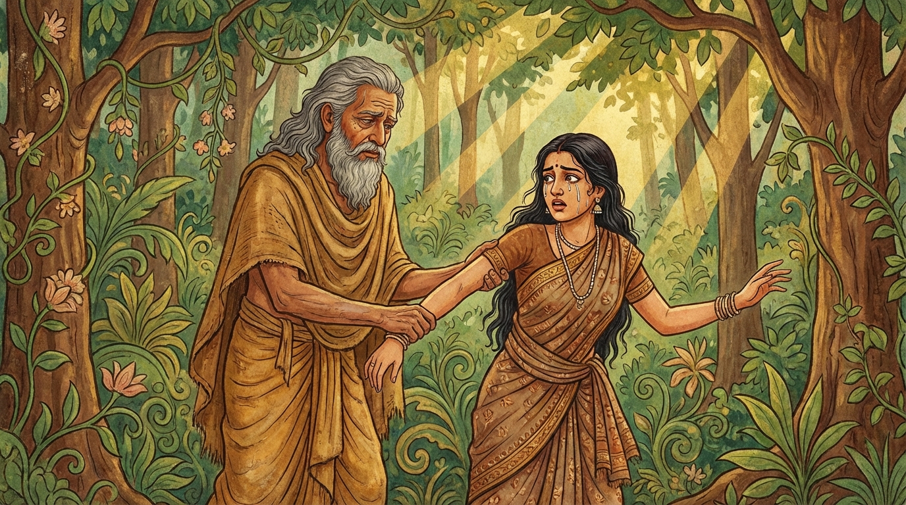

2. පණ්ණික ජාතකය (102)
“යො දුක්ඛඵුට්ඨාය භවෙය්ය තාණන්ති” යන මේ ජාතක දේශනාව බුදුරජාණන් වහන්සේ ජේතවනාරාමයේ වැඩවසන සමයෙහි, පලා වෙළෙඳාම් කරන එක්තරා උපාසකයෙකු අරබයා දේශනා කළ සේක. සැවැත් නුවර විසූ එම උපාසකයා විවිධ අල, පලා වර්ග මෙන්ම ලබු, කොමඩු ආදිය විකුණා ජීවිකාව ගෙන ගියේය. ඔහුට ඉතා රූමත්, ප්රසාදජනක, යහපත් ආචාරශීලී පැවතුම් ඇති, හිරි ඔතප් ඇති දියණියක් සිටියාය. ඇය නිතරම සිනාමුසු මුහුණින් යුක්ත වූවාය. ඇයට සමාන කුලයකින් විවාහ යෝජනාවක් පැමිණි කල්හි උපාසකයා මෙසේ සිතුවේය: “මැයට විවාහ යෝජනාවක් පැමිණ ඇත. මැය නිතරම සිනාමුසු මුහුණින් සිටින්නියකි. කුමාරි ධර්මය නොමැතිව වෙනත් කුලයකට ගියහොත් මව්පියන්ට නින්දා වන්නේය. එබැවින් ‘මැය තුළ කුමාරි ධර්මය ඇත්ද නැද්ද’ යන්න මම විමසා බලමි.”
ඔහු එක් දිනක් දියණිය ලවා පලා කූඩය ගෙන්වාගෙන පලා නෙලනු සඳහා වනයට ගොස්, පරීක්ෂා කිරීමක් වශයෙන් කාමයෙන් මුසපත් වූවෙකු ලෙස රහස් කථා කියමින් ඇගේ අතින් අල්ලා ගත්තේය. එකෙණෙහි ඇය හඬමින් වැළපෙමින්, “පියාණෙනි, මෙය නුසුදුසු ක්රියාවකි. දියෙන් ගිනිදැල් මතුවූවාක් වැනිය. මෙවැනි දෙයක් නොකරනු මැනවැ”යි කීවාය. එවිට පියා, “දියණිය, මා ඔබව විමසනු සඳහා මෙසේ අතින් අල්ලා ගත්තෙමි; කෙලෙස් සිතකින් නොවේ. දැන් මට කියන්න, ඇත්ත වශයෙන්ම ඔබ ළඟ කුමාරි ධර්මය තිබේ ද?”යි ඇසුවේය. “එසේය, පියාණෙනි. මා විසින් රාග සිතින් කිසිදු පුරුෂයෙකු දෙස බලා නොමැත”යි ඇය පිළිතුරු දුන්නාය.
ඉක්බිති උපාසකයා දියණිය අස්වසා, ගෙදර කැඳවාගෙන ගොස් මංගල කටයුතු සිදුකොට ඇය සැමියාගේ නිවසට පිටත් කළේය. පසුව “බුදුරජාණන් වහන්සේ වන්දනා කරමි”යි සිතා ගඳ මල් ආදිය අතැතිව ජේතවනයට ගොස් බුදුරජාණන් වහන්සේ පුදා එක් පසෙක වාඩි විය. “බොහෝ කලකින් පැමිණියේ දැ”යි බුදුරජාණන් වහන්සේ ඇසූ කල්හි ඔහු ඒ සියලු පුවත් සැල කළේය. එවිට බුදුරජාණන් වහන්සේ, “උපාසකය, ඒ කුමරිය බොහෝ කලක පටන් ආචාරශීලී ගුණධර්ම ඇත්තියකි. ඔබ ඇයව විමසූයේ දැන් පමණක් නොවේ, පෙරත් විමසුවේමය”යි වදාරා ඔහු විසින් ආරාධනා කරන ලදුව අතීත කථාව ගෙනහැර දැක්වූ සේක.

අතීතයේ බරණැස් නුවර බ්රහ්මදත්ත රජු රාජ්යය කරන කල්හි බෝධිසත්ත්වයෝ එක්තරා වනයක රුක් දෙවියෙක් වී උපන්හ. එකල්හි බරණැස් නුවර එක්තරා පලා වෙළෙඳ උපාසකයෙක් විය. මෙහි සියලු කථාව වර්තමාන කථාව හා සමාන වේ. එදවස පියා විසින් දියණියගේ අතින් අල්ලා ගත් කල්හි ඇය හඬා වැළපෙමින් මේ ගාථාව කීවාය.
“යමෙක් දුකට පත් මට පිහිට වන්නේ ද, ඒ මගේ පියාම වනයෙහි දී (මට) ද්රෝහීකම් කරයි. වන මැද ඒ මම කවරෙකුගේ පිහිට පතා හඬම් ද? යමෙක් මගේ ආරක්ෂකයා විය යුතු ද, ඔහුම සැහැසිකම් කරයි.”
එහි, “යො දුක්ඛඵුට්ඨාය භවෙය්ය තාණං” යනු කායික හෝ මානසික දුකකින් පීඩාවට පත් වූ කල්හි යමෙක් ආරක්ෂකයා විය යුතු ද, පිහිට විය යුතු ද යන්නයි. “සො මෙ පිතා දුබ්භි වනෙ කරොති” යනු මගේ දුකේදී ආරක්ෂකයා විය යුතු ඒ පියාම මෙම වනය තුළ මෙවැනි මිත්රද්රෝහී ක්රියාවක් කරයි; තමා නිසා උපන් දියණිය කෙරෙහි චාරිත්ර ඉක්මවා කටයුතු කිරීමට සිතයි යන අර්ථයි. “සා කස්ස කන්දාමි” යනු මම කවරෙකුට හඬා කියම් ද? කවරෙක් මට පිහිට වන්නේ ද? යන්න දක්වයි. “යො තායිතා සො සහසං කරොති” යනු යමෙක් මගේ ආරක්ෂකයා - පිහිටවන්නා වීමට සුදුසු ද, ඒ පියාම සැහැසිකම් කරයි යන අර්ථයි.
ඉක්බිති පියා ඇය සනසා, “දියණිය, ඔබ (ශීලයෙන්) රැකුණු තැනැත්තියක් ද?”යි විචාළේය. “එසේය, පියාණෙනි, මගේ ආත්මය (ශීලය) රැකුණේය”යි ඇය කීවාය. පියා ඇයව නිවසට කැඳවාගෙන ගොස් සරසා මංගල විධි පවත්වා කුල ගෙදරකට පිටත් කළේය.
බුදුරජාණන් වහන්සේ මෙම ධර්ම දේශනාව ගෙනහැර දක්වා චතුරාර්ය සත්යය ප්රකාශ කළ අතර ජාතක කථාව ද ගළපා වදාළ සේක. චතුරාර්ය සත්ය දේශනාව අවසානයේ ඒ උපාසකයා සෝවාන් ඵලයෙහි පිහිටියේය.
එකල්හි පියා වූයේ දැන් මේ පියා ම ය. දියණිය වූයේ දැන් මේ දියණිය ම ය. මෙම සිදුවීම සියැසින් දුටු රුක් දෙවියා වූයේ මම ම වෙමි.
පණ්ණික ජාතක වර්ණනාවයි.